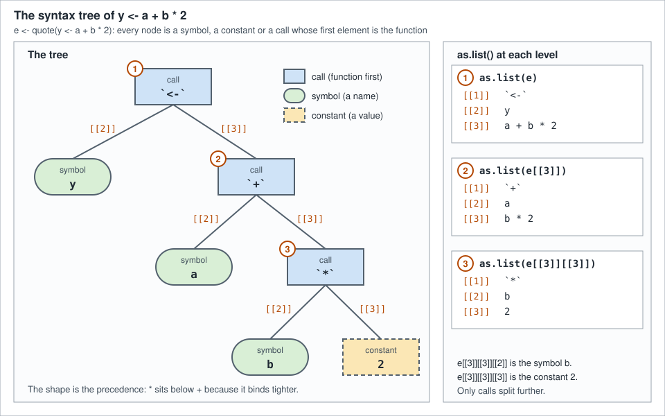

Language Objects and Quoting
|
This content was generated with the assistance of AI and should be verified against the official documentation before being relied on in production. |
Checked against R 4.6.1 (2026-06-24) on 2026-10-20; R 4.6.2 is scheduled for 2026-10-29. Everything on this page is base R (the base and utils packages that ship with R), so no add-on package version applies; the lintr 3.4.0 default linters were used only to check the scripts. In R a piece of code is an object like any other. The parser turns text into symbols, calls and constants; quote() hands them to you instead of running them; and a handful of functions let you look inside, change them, print them back as text and run them later. This page covers what those objects are (symbols, calls, pairlists and expression vectors), how to build and edit them, how substitute() and bquote() build code from templates, how deparse() and parse() convert between objects and text, why building code as a string is almost always the wrong tool, and how to write a function that walks a syntax tree.
Every example is a script that was run with Rscript on R 4.6.1 with warnings printed as they happen (options(warn = 1)), and the lines that start with #> are what it printed. The scripts also pass the default lintr linters. A script that needs the running library-shelf scenario, which the section index describes, starts with source("scenario.R"), which defines books, loans, shelf_today, loan_days and the book class; the other scripts are self-contained. Where a message contains quotation marks, they are the ones R prints in a UTF-8 locale. Rscript does not keep source references (R in a terminal or an IDE does, options(keep.source = TRUE)), so a function prints as deparsed code and a function call carries NULL in the slot where an interactive session stores the source reference. The evaluation side of this topic (eval() in a chosen environment, data masks, local(), tidy evaluation) is the subject of Evaluation and Non-Standard Evaluation; the model formulas that are also language objects are in Formulas; and what a promise is, which substitute() depends on, is explained in Lazy Evaluation and Promises.
Code as data
The manual calls this "computing on the language": R belongs to the family of languages, with Lisp and Scheme, in which a program can construct or modify other code and evaluate the result as an ordinary part of the language, but it presents a friendlier surface than the Lisp family’s principle that code and data are the same lists. You write y <- a + b * 2, and R keeps a tree that you can take apart. The manual lists real uses ranging from analytical derivatives of expressions and the calls to model.frame() that several modelling and plotting functions construct, to plot labels taken from the arguments you typed (R-lang: Computing on the language).
The language objects are few. The manual names three, calls, expressions and names, with the modes "call", "expression" and "name", and notes that it avoids the word expression for anything else, so a syntactically correct piece of code is a statement. A parsed program also contains constants, which are ordinary vectors: the 2 in price * 2 is a numeric vector of length one, not a language object. Together, the four kinds that you meet are these.
| Object | Made by | typeof() |
class() |
What it is |
|---|---|---|---|---|
Symbol (name) |
|
|
|
A reference to a variable by its name, not its value. |
Call |
|
|
|
A function applied to arguments: element 1 is the function, the rest are the arguments. |
Constant |
a literal such as |
|
|
An ordinary vector inside a tree. |
Expression vector |
|
|
|
A list of calls, symbols and constants that are only run when passed to |
The script below puts one of each kind in a list and asks the questions of the table. mode() and class() agree for all four except that a constant is "numeric" in both, and is.language() is the predicate that separates the language objects from plain data (R documentation: is.language). is.call(x) is strictly equivalent to typeof(x) == "language" (R documentation: call).
# A parsed program is built from constants, symbols and calls; an expression
# vector holds several of them.
objs <- list(
constant = quote(2),
symbol = quote(price),
call = quote(price * 2),
expression = expression(price * 2, price)
)
kinds <- data.frame(
typeof = vapply(objs, typeof, character(1)),
class = vapply(objs, \(x) class(x)[[1L]], character(1)),
mode = vapply(objs, mode, character(1)),
language = vapply(objs, is.language, logical(1))
)
kinds
#> typeof class mode language
#> constant double numeric numeric FALSE
#> symbol symbol name name TRUE
#> call language call call TRUE
#> expression expression expression expression TRUE
# Constants are ordinary vectors: is.language() is FALSE for them.
is.language(quote(2))
#> [1] FALSE
is.language(quote(price))
#> [1] TRUE
is.language(quote(price * 2))
#> [1] TRUE
is.language(expression(price))
#> [1] TRUE
# One predicate per kind.
is.symbol(quote(price))
#> [1] TRUE
is.name(quote(price))
#> [1] TRUE
is.call(quote(price * 2))
#> [1] TRUE
is.call(quote(price))
#> [1] FALSE
is.expression(expression(price))
#> [1] TRUE
is.pairlist(NULL)
#> [1] TRUESource: R documentation: is.language
Six functions make or capture these objects, and they differ in what they evaluate. Choosing the right one is most of the skill.
| Function | Evaluates | Returns and typical use |
|---|---|---|
|
nothing |
The parsed code as typed: one call, symbol or constant. Use it for a fixed piece of code. |
|
nothing, but replaces the symbols found in |
The code with those symbols replaced. Use it to capture what the caller typed, or to fill a template from a list. |
|
only the terms wrapped in |
The code with those terms replaced by their values. Use it for a template where most of the code is fixed. |
|
nothing |
A vector of unevaluated code. Use it to keep several pieces together. |
|
its arguments, not the call |
A call to the named function. Use it when the function name is data. |
|
nothing |
A call whose function is the first element of the list. Use it to build a call of any shape from parts. |
Symbols
A symbol, also called a name, refers to an R object by name rather than by the value bound to that name. The manual says symbols have mode "name", storage mode and type "symbol", that they can be created with as.name() and quote(), that they convert to and from strings with as.character() and as.name(), and that they are the atoms of parsed expressions: as.list(quote(x + y)) is a good first experiment (R-lang: Symbol objects). as.name() and as.symbol() are the same function, and is.name() and is.symbol() likewise (R documentation: as.name).
# Symbols are created by quote() or from a string.
s <- quote(shelf_today)
typeof(s)
#> [1] "symbol"
class(s)
#> [1] "name"
mode(s)
#> [1] "name"
as.character(s)
#> [1] "shelf_today"
identical(as.name("shelf_today"), s)
#> [1] TRUE
identical(as.symbol("shelf_today"), s)
#> [1] TRUE
# A symbol is not its value, and it is not a string.
shelf_today <- as.Date("2026-06-30")
s
#> shelf_today
eval(s)
#> [1] "2026-06-30"
is.character(s)
#> [1] FALSE
# Any string can become a symbol; print() adds backticks when the name is not
# syntactic.
odd <- as.name("loan days")
odd
#> `loan days`
as.character(odd)
#> [1] "loan days"
deparse(odd)
#> [1] "loan days"
deparse(odd, backtick = TRUE)
#> [1] "`loan days`"
make.names("loan days")
#> [1] "loan.days"
# A symbol with the same name is always the same object.
identical(as.name("x"), quote(x))
#> [1] TRUE
# as.name() takes the first element of a vector, and NA gives the symbol `NA`.
as.name(c("first", "second"))
#> first
as.name(NA_character_)
#> `NA`
as.name(2026)
#> `2026`Source: R documentation: as.name
A symbol and its value are different things. s prints as shelf_today whether or not a variable of that name exists, and only eval(s) looks the variable up. The string behind a symbol can be anything: as.name("loan days") is a legal symbol although no one could type it as code, and R prints it with backticks. Those backticks are not part of the name. deparse() adds them for a symbol only when it is part of a call (its backtick argument defaults to TRUE for calls, expressions and functions, and to FALSE for a lone symbol), which is what the help page calls a compromise to avoid breaking existing code. The help page also states the limits that as.name() has: it takes the first element of a vector, an NA gives the symbol NA in backticks, a zero-length string is an error, and names are limited to 10,000 bytes (R documentation: as.name). The rules for which strings are syntactic names, and make.names(), are in Syntax and Lexical Structure.
The empty symbol
There is one symbol that stands for nothing. quote(expr = ) is the empty symbol, the object R uses for an argument that was left empty, as in the second index of x[1, ], and for a formal argument without a default. It prints as an empty line, it has type "symbol", and its string is "". It is an awkward object to hold in a variable: a variable bound to it behaves like a missing argument, and merely mentioning the variable is an error. Compare it with identical() and keep it inside the call or list that holds it.
# The empty symbol stands for an argument that was left empty.
empty <- quote(expr = )
tryCatch(typeof(empty), error = conditionMessage)
#> [1] "argument \"empty\" is missing, with no default"
identical(quote(expr = ), quote(expr = ))
#> [1] TRUE
typeof(quote(expr = ))
#> [1] "symbol"
deparse(quote(expr = ))
#> [1] ""
as.character(quote(expr = ))
#> [1] ""
is.name(quote(expr = ))
#> [1] TRUEThe manual’s grammar allows an empty argument in any call (g(tag = value, , 5)), which is why a walker over a syntax tree has to expect this object; the section on walking trees below shows the trap and the way round it.
Calls
A call is a function applied to arguments. The manual calls these objects "unevaluated expressions", a term it admits is confusing, and treats them as the main thing you can modify: the components of a call are accessed with list-like syntax, can be converted to and from lists with as.list() and as.call(), and take tags from the argument names (R-lang: Direct manipulation of language objects).
quote(), call() and as.call()
quote() is the direct route: it returns the parsed argument without evaluating it. The result has typeof() "language" and class() and mode() "call". Its first element is the function, here the symbol round, and the others are the arguments, here a call (loan_days / 7) and a constant that has the name digits. names() shows "" for the unnamed positions. Nothing in this object looks up loan_days; the variable is defined only afterwards, and eval() then runs the whole call.
# quote() returns the parsed call without evaluating it.
cl <- quote(round(loan_days / 7, digits = 1))
typeof(cl)
#> [1] "language"
class(cl)
#> [1] "call"
mode(cl)
#> [1] "call"
length(cl)
#> [1] 3
# A call is addressed like a list: the function first, then the arguments.
cl[[1L]]
#> round
cl[[2L]]
#> loan_days/7
cl[[3L]]
#> [1] 1
cl$digits
#> [1] 1
names(cl)
#> [1] "" "" "digits"
as.list(cl)
#> [[1]]
#> round
#>
#> [[2]]
#> loan_days/7
#>
#> $digits
#> [1] 1
#>
# Evaluating it runs the call.
loan_days <- 21L
eval(cl)
#> [1] 3call() and as.call() build the same objects from parts. call(name, ...) takes the function name as a string and the arguments as further arguments, and the arguments are evaluated: call("round", weeks * 2, digits = 1) has the number 6 where the code had weeks * 2. To keep a piece of code as code, wrap it in quote(). as.call() takes a list whose first element is the function, as a symbol or as a function object, and evaluates nothing at all, which makes it the general builder. A string will not do as the first element of that list: the result prints as "sum"(1, 2) and fails when evaluated, because the parser turns a string in the function position of typed code into a symbol and as.call() does not. call() does the conversion for you. The help page says that call() and as.call() are preferable to anything based on parse() where they apply (R documentation: call). A function object stored in a call prints in full, as .Primitive("sum")(1, 2, 3) shows, and the function position can hold any expression that evaluates to a function, such as f(1) in f(1)(2).
# call() builds a call from a function name and values. Its arguments are
# evaluated first, so quote() the ones that must stay code.
weeks <- 3
call("round", weeks * 2, digits = 1)
#> round(6, digits = 1)
call("round", quote(weeks * 2), digits = 1)
#> round(weeks * 2, digits = 1)
identical(
call("round", quote(weeks * 2), digits = 1),
quote(round(weeks * 2, digits = 1))
)
#> [1] TRUE
# as.call() builds a call from a list; the first element is the function.
as.call(list(as.name("sum"), 1, 2, 3))
#> sum(1, 2, 3)
as.call(list(sum, 1, 2, 3))
#> .Primitive("sum")(1, 2, 3)
eval(as.call(list(as.name("sum"), 1, 2, 3)))
#> [1] 6
# The function position may hold any expression that gives a function.
quote(f(1)(2))
#> f(1)(2)
quote(f(1)(2))[[1L]]
#> f(1)
class(quote(f(1)(2))[[1L]])
#> [1] "call"
# A string in the function position is data, not a symbol: it does not run.
bad <- as.call(list("sum", 1, 2))
bad
#> "sum"(1, 2)
tryCatch(eval(bad), error = conditionMessage)
#> [1] "attempt to apply non-function"
call("sum", 1, 2)[[1L]]
#> sumSource: R documentation: call
Calls are lists: reading and editing
Because a call is list-like, every list idiom works on it, with three details worth knowing. First, assigning NULL removes an element, the way it does for a list, so cl[["digits"]] <- NULL removes the argument named digits. Second, [ on a call returns a call, so cl[-1] does not return the arguments; it returns a call whose function is the old first argument. Third, $ matches argument names partially, as $ on a list does, so rounded$dig finds digits; [[ matches exactly unless you ask for exact = FALSE. That makes [["name"]] the safe form in code that edits calls.
# A call is modified like a list. Start from a call with one named argument.
cl <- quote(round(loan_days / 7, digits = 1))
cl[[1L]] <- as.name("signif") # replace the function
cl
#> signif(loan_days/7, digits = 1)
cl$digits <- 3 # replace a named argument
cl
#> signif(loan_days/7, digits = 3)
cl[[2L]] <- quote(loan_days / 7 + 1) # replace a sub-expression
cl
#> signif(loan_days/7 + 1, digits = 3)
cl$na.rm <- TRUE # a new named argument is appended
cl
#> signif(loan_days/7 + 1, digits = 3, na.rm = TRUE)
cl[["digits"]] <- NULL # NULL removes an argument
cl
#> signif(loan_days/7 + 1, na.rm = TRUE)
cl[[length(cl) + 1L]] <- 0 # a new unnamed argument at the end
cl
#> signif(loan_days/7 + 1, na.rm = TRUE, 0)
# `[` on a call returns a call, so dropping element 1 drops the function.
quote(f(a, b))[-1L]
#> a(b)
quote(f(a, b))[-2L]
#> f(b)
# `$` matches names partially, like `$` on a list; `[[` is exact.
rounded <- quote(round(x, digits = 1))
rounded$dig
#> [1] 1
rounded[["dig"]]
#> NULL
rounded[["dig", exact = FALSE]]
#> [1] 1The R-lang example of editing a call replaces the function of plot(x, y) by + with e2[[1]] <- as.name("+"), and nests one call inside another by assigning it to an element (e1[[2]] <- e2). That is the whole mechanism: a tree is edited by replacing the node at a path.
match.call(): standardising before editing
A call as typed cannot be edited by name when the caller used positions. quote(due_date(as.Date("2026-06-01"), 7))$days is NULL, because the 7 is simply the third element. match.call(definition, call) matches the arguments of a call to the formals of a function and returns the call with every argument named and in the order of the formals, which is the form to edit. Inside a function it needs no arguments and returns the call that invoked the function, already standardised; sys.call() returns the call as typed (R documentation: match.call and R documentation: sys.call). The details of argument matching, including the three passes and match.call() with the dots, are in Functions.
# The user typed the days by position; a call can only be edited by name
# after match.call() has standardised it.
due_date <- function(loan_date, days = 21L) loan_date + days
typed <- quote(due_date(as.Date("2026-06-01"), 7))
typed$days
#> NULL
standard <- match.call(due_date, typed)
standard
#> due_date(loan_date = as.Date("2026-06-01"), days = 7)
standard$days
#> [1] 7
standard$days <- 14
standard
#> due_date(loan_date = as.Date("2026-06-01"), days = 14)
eval(standard)
#> [1] "2026-06-15"
# Inside a function, match.call() returns the call that invoked it, already
# standardised: argument names are complete and in the order of the formals.
who_called <- function(loan_date, days = 21L, ...) match.call()
who_called(days = 7, as.Date("2026-06-01"))
#> who_called(loan_date = as.Date("2026-06-01"), days = 7)
who_called(as.Date("2026-06-01"), extra = TRUE)
#> who_called(loan_date = as.Date("2026-06-01"), extra = TRUE)
who_called(as.Date("2026-06-01"), extra = TRUE)$extra
#> [1] TRUE
# sys.call() returns the call as it was typed, without matching.
as_typed <- function(loan_date, days = 21L) sys.call()
as_typed(days = 7, as.Date("2026-06-01"))
#> as_typed(days = 7, as.Date("2026-06-01"))Source: R documentation: match.call
Standardising first is what the modelling functions do. The manual’s example is the start of lm(): it takes its own call with match.call(), deletes the arguments that model.frame() does not know by assigning NULL, adds one with a tagged assignment, replaces the function in element 1 with as.name("model.frame") and evaluates the result in the parent frame, where the expressions of the arguments are known to make sense. The manual also notes that match.call(expand.dots = FALSE) collects the dots into a single argument tagged ..., which is a pairlist and not a call to list() as it is in S (R-lang: Manipulation of function calls). The script applies the same pattern to a function of the shelf scenario. long_books() turns a call to itself into a call to subset(), puts the value of min_pages into the new subset argument with bquote() (described below), and either returns that call or evaluates it in the frame of its caller, where books lives.
source("scenario.R")
# The pattern at the start of lm(): take the call, keep what another function
# needs, change the function, and evaluate the result in the caller's frame.
long_books <- function(x, min_pages = 300L, call_only = FALSE) {
cl <- match.call()
cl[[1L]] <- as.name("subset")
cl$min_pages <- cl$call_only <- NULL
cl$subset <- bquote(pages >= .(min_pages))
cl$select <- quote(c(title, pages))
if (call_only) {
cl
} else {
eval(cl, parent.frame())
}
}
long_books(books, call_only = TRUE)
#> subset(x = books, subset = pages >= 300L, select = c(title, pages))
long_books(books, min_pages = 400L, call_only = TRUE)
#> subset(x = books, subset = pages >= 400L, select = c(title, pages))
long_books(books, min_pages = 400L)
#> title pages
#> 2 Pride and Prejudice 432
#> 12 Notes on Gravity 410Syntax is calls
The manual states the principle: every elementary R expression is stored in function call form, as a list whose first element is the function and whose remaining elements are the arguments, and all syntax elements are treated this way (R-lang: Internal representation). The assignment x <- 1 is the call "<-"(x, 1). The same holds for arithmetic (a + b is a call to + with two arguments), for indexing (x[1], x[[1]] and x$name are calls to [, [[ and $), for blocks and branches ({, if, for and while), and for function definitions (a call to function). Parentheses are kept as a call to ( with one argument, even when precedence would make them redundant, so that (a + b) * 2 and a + b * 2 have different trees (R-lang: Expressions).
The table that the script prints shows what that means for the questions you can ask. class() is "call" for most of them, but the help page of call() lists the exceptions that have their own class, the function name itself: if, for, while, (, {, <- and =. That is why class(x) == "call" is not a test for a call; use is.call(). mode() is "(" for the parenthesis call and "call" for the rest. A function expression has four elements: the function, the formals (a pairlist, see below), the body and a slot for the source reference, which is NULL here and a srcref object in an interactive session.
# Syntax is made of calls: operators, parentheses, braces, if, for, [ and $.
forms <- list(
"a + b" = quote(a + b),
"-a" = quote(-a),
"(a + b)" = quote((a + b)),
"{ a; b }" = quote({
a
b
}),
"if (a) b else c" = quote(if (a) b else c),
"for (i in 1:3) i" = quote(for (i in 1:3) i),
"while (a) b" = quote(while (a) b),
"x[1]" = quote(x[1]),
"x[[1]]" = quote(x[[1]]),
"x$name" = quote(x$name),
"y <- 1" = quote(y <- 1),
"y = 1" = str2lang("y = 1"),
"function(x) x" = quote(function(x) x)
)
summary_table <- data.frame(
fn = vapply(forms, \(e) deparse1(e[[1L]], backtick = TRUE), character(1)),
n = vapply(forms, length, integer(1)),
class = vapply(forms, \(e) class(e)[[1L]], character(1)),
mode = vapply(forms, mode, character(1))
)
summary_table
#> fn n class mode
#> a + b `+` 3 call call
#> -a `-` 2 call call
#> (a + b) `(` 2 ( (
#> { a; b } `{` 3 { call
#> if (a) b else c `if` 4 if call
#> for (i in 1:3) i `for` 4 for call
#> while (a) b `while` 3 while call
#> x[1] `[` 3 call call
#> x[[1]] `[[` 3 call call
#> x$name `$` 3 call call
#> y <- 1 `<-` 3 <- call
#> y = 1 `=` 3 = call
#> function(x) x `function` 4 call call
# The native pipe and the backslash lambda disappear at parse time.
quote(x |> f(y))
#> f(x, y)
identical(quote(x |> f(y)), quote(f(x, y)))
#> [1] TRUE
identical(quote(\(x) x + 1), quote(function(x) x + 1))
#> [1] TRUE
# Parentheses are kept as a call to `(`.
quote((a + b) * 2)[[2L]]
#> (a + b)
class(quote((a + b) * 2)[[2L]])
#> [1] "("
# A function definition is a call to `function` with a pairlist of formals,
# the body, and a slot for the source reference.
fn_call <- quote(function(x, y = 2) x + y)
as.list(fn_call)
#> [[1]]
#> `function`
#>
#> [[2]]
#> [[2]]$x
#>
#>
#> [[2]]$y
#> [1] 2
#>
#>
#> [[3]]
#> x + y
#>
#> [[4]]
#> NULL
#>
typeof(fn_call[[2L]])
#> [1] "pairlist"Two pieces of syntax do not survive parsing. The native pipe x |> f(y), new in R 4.1.0, is rewritten by the parser into f(x, y), so the call you get has no trace of the pipe, which the NEWS entry describes as a syntax transformation. The lambda \(x) x + 1, also new in 4.1.0, is parsed as function(x) x + 1 and the two are identical(). The pipe is the subject of Pipes and the Native Pipe.
The syntax tree of an expression
Drawn as a tree, a call is a node whose children are its elements: the function first, then the arguments, each of which is a symbol, a constant or another call. This is an abstract syntax tree: it records the structure of the code and nothing about the layout, the spaces or the comments. The figure shows the tree of y <- a + b * 2 and, beside it, what as.list() returns at each of its three levels.

The shape of the tree is the precedence. * binds tighter than +, which binds tighter than <-, so b * 2 is a subtree of the + call and not the other way round; (a + b) * 2 has the same symbols and a different tree, in which the call to * is the root and has a ( call as its first argument. The script prints the three levels of the figure, reads the leaves with paths of [[, and ends with a small printer that writes one line per node.
# The syntax tree of y <- a + b * 2, one level of as.list() at a time.
e <- quote(y <- a + b * 2)
as.list(e)
#> [[1]]
#> `<-`
#>
#> [[2]]
#> y
#>
#> [[3]]
#> a + b * 2
#>
as.list(e[[3L]])
#> [[1]]
#> `+`
#>
#> [[2]]
#> a
#>
#> [[3]]
#> b * 2
#>
as.list(e[[3L]][[3L]])
#> [[1]]
#> `*`
#>
#> [[2]]
#> b
#>
#> [[3]]
#> [1] 2
#>
# Paths into the tree are chains of [[ ]].
e[[2L]]
#> y
e[[3L]][[2L]]
#> a
e[[3L]][[3L]][[2L]]
#> b
e[[3L]][[3L]][[3L]]
#> [1] 2
typeof(e[[3L]][[3L]][[3L]])
#> [1] "double"
# The shape of the tree is the precedence: * binds tighter than +.
as.list(quote((a + b) * 2))
#> [[1]]
#> `*`
#>
#> [[2]]
#> (a + b)
#>
#> [[3]]
#> [1] 2
#>The printer is a first example of the recursion that the section on walking trees builds on: one branch for a call, one for a symbol and one for a constant, with the arguments of a call visited by the same function.
e <- quote(y <- a + b * 2)
# A small printer: one line per node, indented by depth.
show_ast <- function(expr, depth = 0L) {
pad <- strrep(" ", depth)
if (is.call(expr)) {
cat(pad, "call ", deparse1(expr[[1L]], backtick = TRUE), "\n", sep = "")
for (i in seq_along(expr)[-1L]) {
show_ast(expr[[i]], depth + 1L)
}
} else if (is.symbol(expr)) {
cat(pad, "symbol ", deparse1(expr, backtick = TRUE), "\n", sep = "")
} else {
cat(pad, "constant ", deparse1(expr), "\n", sep = "")
}
}
show_ast(e)
#> call `<-`
#> symbol y
#> call `+`
#> symbol a
#> call `*`
#> symbol b
#> constant 2
show_ast(quote(round(x / 7, digits = 1)))
#> call round
#> call `/`
#> symbol x
#> constant 7
#> constant 1The tree that quote() returns is the abstract one. The parser also keeps a concrete record of every token, comments included, when keep.source = TRUE, and getParseData() returns it as a data frame: one row per token with its position, its parent and its type (SYMBOL, LEFT_ASSIGN, NUM_CONST and the operators). That table is what code formatters and linters read. It is a different object from the syntax tree, and the page on Style, Linting and Static Analysis is where it matters.
# The parser also keeps a table of tokens (a concrete syntax tree) when
# keep.source = TRUE; the abstract tree is what quote() returns.
pd <- getParseData(parse(text = "y <- a + b * 2", keep.source = TRUE))
pd[, c("line1", "col1", "col2", "id", "parent", "token", "text")]
#> line1 col1 col2 id parent token text
#> 15 1 1 14 15 0 expr
#> 1 1 1 1 1 3 SYMBOL y
#> 3 1 1 1 3 15 expr
#> 2 1 3 4 2 15 LEFT_ASSIGN <-
#> 14 1 6 14 14 15 expr
#> 4 1 6 6 4 6 SYMBOL a
#> 6 1 6 6 6 14 expr
#> 5 1 8 8 5 14 '+' +
#> 13 1 10 14 13 14 expr
#> 7 1 10 10 7 9 SYMBOL b
#> 9 1 10 10 9 13 expr
#> 8 1 12 12 8 13 '*' *
#> 10 1 14 14 10 11 NUM_CONST 2
#> 11 1 14 14 11 13 exprSource: R documentation: getParseData
Pairlists
A pairlist is the Lisp-style list that R uses inside its internals. The manual describes each cell as having three slots, a CAR (the item), a CDR (the rest of the list, ending with NULL) and a TAG (the name), and says that pairlists are rarely visible in interpreted code although formals() returns one and pairlist() creates one. A zero-length pairlist is NULL, in contrast to a zero-length list. They are handled in R exactly as generic vectors are, with [[ and $, and the manual adds that their use is deprecated because ordinary lists are usually more efficient; what you get back when you subset one is a plain list (R-lang: Pairlist objects).
In practice you meet pairlists in three places: the value of formals() (and so the second element of a function call), the ... slot returned by match.call(expand.dots = FALSE), and .Options. The first is the one that matters for language objects. The values of a formals pairlist are the default expressions, and an argument without a default holds the empty symbol; the dots appear as an entry named ... that is also empty. is.list() is TRUE for a pairlist, but typeof() and class() tell them apart from a list.
# formals() returns a pairlist: a list whose values may be the empty symbol.
source("scenario.R")
due_date <- function(loan_date,
days = loan_days, # nolint: object_usage_linter.
...) {
loan_date + days
}
fm <- formals(due_date)
typeof(fm)
#> [1] "pairlist"
class(fm)
#> [1] "pairlist"
mode(fm)
#> [1] "pairlist"
names(fm)
#> [1] "loan_date" "days" "..."
fm$days
#> loan_days
class(fm$days)
#> [1] "name"
fm$loan_date
#>
typeof(fm$loan_date)
#> [1] "symbol"
str(fm)
#> Dotted pair list of 3
#> $ loan_date: symbol
#> $ days : symbol loan_days
#> $ ... : symbol
# A pairlist behaves like a list...
is.list(fm)
#> [1] TRUE
length(fm)
#> [1] 3
fm[["days"]]
#> loan_days
fm$days <- 7L
typeof(fm)
#> [1] "pairlist"
fm$days
#> [1] 7
# ...but [ and as.list() give an ordinary list.
typeof(fm[1L])
#> [1] "list"
typeof(as.list(fm))
#> [1] "list"pairlist() and as.pairlist() make a pairlist, is.pairlist() tests for one, and NULL counts as the empty pairlist. alist() builds a plain list whose arguments are not evaluated, and alist(x = ) gives an empty value, which is the standard way to write the formals of a function that you are about to build with as.function(). args() returns a function with the same formals and a NULL body, which is the supported way to look at the interface of any function, primitives included (R documentation: pairlist and R documentation: args).
due_date <- function(loan_date, days = 21L, ...) loan_date + days
# pairlist() and as.pairlist() make one; an empty pairlist is NULL.
pl <- pairlist(a = 1, b = "x")
typeof(pl)
#> [1] "pairlist"
is.pairlist(pl)
#> [1] TRUE
is.pairlist(list(a = 1))
#> [1] FALSE
as.pairlist(list(a = 1, b = 2))
#> $a
#> [1] 1
#>
#> $b
#> [1] 2
#>
typeof(pairlist())
#> [1] "NULL"
is.pairlist(NULL)
#> [1] TRUE
formals(function() 1)
#> NULL
formals(sum)
#> NULL
# alist() builds a list whose arguments are not evaluated: the standard way to
# write the formals of a function.
alist(x = , y = 2 + 2)
#> $x
#>
#>
#> $y
#> 2 + 2
#>
as.function(alist(x = , y = 2, x + y))(1)
#> [1] 3
# args() returns a function with the same formals and a NULL body.
args(due_date)
#> function (loan_date, days = 21L, ...)
#> NULL
body(args(due_date))
#> NULLSource: R documentation: pairlist
Expression vectors
An expression vector is a list of language objects with type "expression". The manual describes it as a container for several parsed but unevaluated statements, and gives the two differences from a call: it can hold more than one, and it is only evaluated when explicitly passed to eval(), whereas other language objects may be evaluated in unexpected cases. It behaves like a list: [[ extracts one element (a call, symbol or constant) and [ returns a shorter expression vector (R-lang: Expression objects). The help page makes the point about the word: an expression, in R’s sense, is not a mathematical expression, which is a call; an expression vector is what parse() returns (R documentation: expression).
eval() on an expression vector evaluates every element in order and returns the value of the last one, and the side effects, like the assignment to price below, stay. eval() on a list of calls returns the list unchanged: the list is a data structure, not code.
# expression() keeps several unevaluated expressions in one vector.
ex <- expression(price <- 12, price * 2, "done")
typeof(ex)
#> [1] "expression"
class(ex)
#> [1] "expression"
mode(ex)
#> [1] "expression"
length(ex)
#> [1] 3
is.expression(ex)
#> [1] TRUE
is.language(ex)
#> [1] TRUE
# Elements are addressed like a list; [[ gives the call, [ gives an expression.
ex[[2L]]
#> price * 2
class(ex[[2L]])
#> [1] "call"
ex[2L]
#> expression(price * 2)
class(ex[2L])
#> [1] "expression"
ex[[3L]]
#> [1] "done"
# Nothing runs until eval() is called, and eval() runs every element in turn
# and returns the value of the last one.
eval(ex)
#> [1] "done"
price
#> [1] 12
# A list of calls is not evaluated by eval(); an expression vector is.
eval(list(quote(price * 3)))
#> [[1]]
#> price * 3
#>
eval(expression(price * 3))
#> [1] 36parse() returns an expression vector with one element for every top-level expression of the text, however many lines or semicolons it took. vapply() and for walk it like a list; as.expression() converts, with NULL, calls, symbols and pairlists becoming a one-element vector and lists becoming an expression vector of the same elements; c() joins them; and expression() is itself a special primitive that does not evaluate its arguments. One confusion the substitute() help page warns about: quote(expression(a)) and substitute(expression(a + b), list(a = 1)) return a call to the expression function, not an expression vector, until you eval() them.
# parse() returns an expression vector too, one element per top-level
# expression, whatever the number of lines.
parsed <- parse(text = c("loans_total <- 60", "loans_total / 4"))
length(parsed)
#> [1] 2
vapply(parsed, \(e) class(e)[[1L]], character(1))
#> [1] "<-" "call"
vapply(parsed, deparse1, character(1))
#> [1] "loans_total <- 60" "loans_total/4"
for (e in parsed) {
print(eval(e))
}
#> [1] 60
#> [1] 15
# Names, c(), as.expression() and the empty vector.
named <- expression(first = a + 1, second = b)
names(named)
#> [1] "first" "second"
c(expression(a), expression(b + 1))
#> expression(a, b + 1)
as.expression(quote(a + b))
#> expression(a + b)
as.expression(list(1, quote(x)))
#> expression(1, x)
expression()
#> expression()
length(expression())
#> [1] 0Source: R documentation: expression
Running what you built
A language object does nothing until it is evaluated, and eval(expr, envir) evaluates it: a symbol evaluates to its value, a call to the result of the call, a constant to itself, and an expression vector to its last element after running all of them. The second argument says where the symbols are looked up and can be a list, a data frame or an environment, which is how eval(quote(mean(pages, na.rm = TRUE)), books) finds the column. do.call(what, args) is the other direct route: it builds a call from a function and a list of arguments and evaluates it, so the three expressions at the end of the script give the same result. All the details, including enclos, evalq(), local() and the pitfalls of non-standard evaluation, are in Evaluation and Non-Standard Evaluation.
source("scenario.R")
# eval() runs a language object; the second argument says where to look up
# the symbols (a list, a data frame or an environment).
due <- quote(loan_date + days)
eval(due, list(loan_date = as.Date("2026-06-01"), days = 7L))
#> [1] "2026-06-08"
eval(quote(mean(pages, na.rm = TRUE)), books)
#> [1] 268.2143
# A symbol evaluates to its value, a constant to itself.
eval(quote(loan_days))
#> [1] 21
eval(quote(21L))
#> [1] 21
# do.call() builds a call from a function and a list of arguments, then
# evaluates it.
do.call(paste, list("L001", "L002", sep = "-"))
#> [1] "L001-L002"
do.call("paste", list("L001", "L002", sep = "-"))
#> [1] "L001-L002"
eval(as.call(list(as.name("paste"), "L001", "L002", sep = "-")))
#> [1] "L001-L002"
# Evaluating a stored expression is the main use of an expression vector.
tests <- expression(nrow(books) == 16L, nrow(loans) == 60L)
vapply(tests, eval, logical(1))
#> [1] TRUE TRUESource: R documentation: eval
Functions as language objects
A function is a closure made of language objects: formals() is a pairlist, body() is a call, a symbol or a constant, and environment() is the environment where the function was created. All three have replacement forms, and as.function() builds a function from a list whose last element is the body. The manual describes the conversion between functions and lists with as.list() and as.function() as provided for S compatibility and discouraged, and the replacement forms of formals(), body() and environment() as the supported way (R-lang: Function objects). The page Functions covers the three components as a feature of functions; here they are trees that can be edited.
The body of a function written with braces is a call to { with one element per statement, so length(body(f)) is the number of statements plus one, and body(f)[[2]] is the first statement. Replacing that element builds a new function; the original is not changed, because the replacement forms work on a copy as every R assignment does.
# A function is made of language objects: formals (a pairlist), a body
# (a call, a symbol or a constant) and an environment.
due_date <- function(loan_date, days = 21L) {
loan_date + days
}
formals(due_date)
#> $loan_date
#>
#>
#> $days
#> [1] 21
#>
body(due_date)
#> {
#> loan_date + days
#> }
class(body(due_date))
#> [1] "{"
body(due_date)[[1L]]
#> `{`
body(due_date)[[2L]]
#> loan_date + days
environmentName(environment(due_date))
#> [1] "R_GlobalEnv"
# The body is a call to `{` with one element per statement.
length(body(due_date))
#> [1] 2
as.list(body(due_date))
#> [[1]]
#> `{`
#>
#> [[2]]
#> loan_date + days
#>
# Replacing parts builds a new function.
body(due_date)[[2L]] <- quote(loan_date + days + 1L)
due_date(as.Date("2026-06-01"))
#> [1] "2026-06-23"
formals(due_date)$days <- 14L
due_date(as.Date("2026-06-01"))
#> [1] "2026-06-16"Source: R documentation: body
substitute(): the expression behind an argument
substitute(expr, env) returns the parse tree of expr with the symbols found in env replaced. The help page states the rules one component at a time: a symbol that is not bound in env is left alone; a symbol bound to a promise, which is what a formal argument is, is replaced by the expression slot of the promise; a symbol bound to an ordinary variable is replaced by its value, unless env is the global environment, in which case it is left alone. env defaults to the current evaluation environment and can be an environment or a list (R documentation: substitute and quote). The R-lang manual explains the promise rule in terms of lazy evaluation: a formal argument is a promise with three slots, the expression that defines it, the environment in which to evaluate it and the value once evaluated, and substitute() reads the first (R-lang: Substitutions). The page Lazy Evaluation and Promises shows the promise from the inside, including the two surprises that follow from the rule: an argument that was modified before substitute() runs is replaced by its new value, and a function that passes its argument on to another function hands over its own symbol, not the caller’s expression.
In a function: labels
The classic use is a label. A function that receives books$pages can describe it as books$pages instead of x, because substitute(x) returns the call that the caller typed for the promise. The manual’s example is the start of plot.default(), which labels the axis with the text of the argument, and the help page of substitute() has myplot() doing the same with deparse1(substitute(x)). deparse1() matters here: a label must be one string, and deparse() returns several when the expression is long (see the section on deparse() below).
source("scenario.R")
# Inside a function, substitute(x) is the expression the caller wrote for x.
describe_column <- function(x) {
label <- deparse1(substitute(x))
sprintf("%s: %d values, %d missing", label, length(x), sum(is.na(x)))
}
describe_column(books$pages)
#> [1] "books$pages: 16 values, 2 missing"
describe_column(loans$return_date)
#> [1] "loans$return_date: 60 values, 7 missing"With a list or an environment: templates
With a second argument, substitute() becomes a template engine. Each symbol of the first argument that has a name in the list is replaced by the value, and a symbol that is not in the list stays. The values are inserted as they are, so a call must be quoted to stay a call: substitute(a + b, list(a = 1, b = quote(x))) is 1 + x, and without the quote() the x would have been looked up in the calling frame. The R-lang manual uses this to put computed values into mathematical annotation in plots. The substitution is purely lexical, which the help page states as a warning: nothing checks that the result is sensible, and substitute(x <- x + 1, list(x = 2)) returns 2 <- 2 + 1 without complaint.
Because substitute() does not evaluate its first argument, an expression that is stored in a variable cannot be passed to it directly: substitute(expr, list(x = 3)) finds no x in the symbol expr and returns expr. The manual’s answer is to call substitute() on the call to substitute() and evaluate the result; do.call(substitute, list(expr, list(x = 3))) is the shorter form of the same idea, since do.call() evaluates its arguments and passes the values.
source("scenario.R")
# With a list (or an environment) as second argument, substitute() replaces
# the symbols found there and leaves the others alone.
substitute(a + b, list(a = 1, b = quote(x)))
#> 1 + x
cond <- substitute(
year > min_year & pages < max_pages,
list(min_year = 2000, max_pages = 300L)
)
cond
#> year > 2000 & pages < 300L
books$title[which(eval(cond, books))]
#> [1] " the quiet streets " "Loud Roofs" "THE LONG TABLE"
#> [4] "Paper Moons" "Orchard Logic" "Salt and Static"
# The substitution is purely lexical: nothing checks the result makes sense.
substitute(x <- x + 1, list(x = 2))
#> 2 <- 2 + 1At the top level and in other frames
The exception for the global environment looks odd. The manual says it was inherited from S and that the likely rationale is that there is no control over which variables are bound at the top level, so it is better for substitute() to behave like quote() there. The consequence is that an experiment typed at the console behaves differently from the same call inside a function or inside local(), which does have a frame of its own. In the script, substitute(price * (1 + rate)) leaves rate alone at the top level, local() replaces it, and passing an environment explicitly does as well. Inside a function, the variables that substitute() replaces are the arguments and the local variables.
# At the top level (the global environment) there is nothing to substitute.
rate <- 0.21
substitute(price * (1 + rate))
#> price * (1 + rate)
local({
rate <- 0.1
substitute(price * (1 + rate))
})
#> price * (1 + 0.1)
substitute(price * (1 + rate), list2env(list(rate = 0.1)))
#> price * (1 + 0.1)
# substitute() does not evaluate its first argument, so an expression that is
# stored in a variable needs a second substitute(), or do.call().
expr <- quote(x + y)
substitute(expr, list(x = 3))
#> expr
substitute(substitute(e, list(x = 3)), list(e = expr))
#> substitute(x + y, list(x = 3))
eval(substitute(substitute(e, list(x = 3)), list(e = expr)))
#> 3 + y
do.call(substitute, list(expr, list(x = 3)))
#> 3 + yThe dots
The dots are a list of promises, so substitute() reaches all of them at once. substitute(list(...)) returns a call to list() whose arguments are the expressions the caller wrote, with their names; dropping the first element and deparsing each gives labels. match.call(expand.dots = FALSE)$... returns the same expressions as a pairlist. ...length() and ...names() describe the dots without evaluating them. This is how data.frame() and cbind() name their columns after the arguments, and the helper named_values() in the script does the same for a list. The details of the dots, ..1 and ...elt() are in Functions and in R documentation: dots.
source("scenario.R")
# The dots hold several promises; substitute(list(...)) is a call to list()
# whose arguments are the expressions the caller wrote.
dots_call <- function(...) substitute(list(...))
dots_call(shelf_today, days = loan_days * 2, books$pages)
#> list(shelf_today, days = loan_days * 2, books$pages)
# Dropping the first element leaves the expressions.
dot_labels <- function(...) {
exprs <- as.list(substitute(list(...)))[-1L]
vapply(exprs, deparse1, character(1))
}
dot_labels(shelf_today, loan_days * 2, books$pages)
#> [1] "shelf_today" "loan_days * 2" "books$pages"
# match.call(expand.dots = FALSE) collects them as a pairlist under `...`.
dots_slot <- function(x, ...) match.call(expand.dots = FALSE)$...
dots_slot(1, a, b = c + 1)
#> [[1]]
#> a
#>
#> $b
#> c + 1
#>
# ...length() and ...names() describe the dots without evaluating them.
dots_info <- function(...) list(n = ...length(), names = ...names())
dots_info(a = 1, 2, b = 3)
#> $n
#> [1] 3
#>
#> $names
#> [1] "a" "" "b"
#>
# What data.frame() and cbind() do: name the values after the expressions.
named_values <- function(...) {
values <- list(...)
names(values) <- dot_labels(...)
values
}
named_values(shelf_today, loan_days)
#> $shelf_today
#> [1] "2026-06-30"
#>
#> $loan_days
#> [1] 21
#>Source: R documentation: dots
bquote(): a template with holes
bquote() is the analogue of the Lisp backquote macro: it quotes its argument, except that terms wrapped in .() are evaluated in the environment where (by default the caller’s frame) and the value is put in their place. Where substitute() replaces every symbol that has a binding, bquote() replaces only the terms you marked, so the rest of the template is safe from accidental capture: a template that mentions a column named genre in a function that also has a variable called genre is correct with bquote(genre == .(wanted)) and wrong with substitute(), which would replace the column name by whatever the variable holds (R documentation: bquote). The script shows the filter of the shelf scenario built from two variables, the difference from substitute(), the use of as.name() to turn a string into a column name or a function, and the fact that the inserted value keeps its class: the Date is a Date inside the call even though the call prints as a number, because printing is a deparse.
source("scenario.R")
# bquote() quotes its argument and evaluates only what is inside .().
wanted <- "Mystery"
min_year <- 2016
cond <- bquote(genre == .(wanted) & year > .(min_year))
cond
#> genre == "Mystery" & year > 2016
books$title[which(eval(cond, books))]
#> [1] "Salt and Static"
# Without .() nothing is substituted, unlike substitute(), which replaces
# every symbol it finds in the list or frame.
bquote(genre == wanted)
#> genre == wanted
substitute(genre == wanted, list(wanted = "Mystery"))
#> genre == "Mystery"
# .() can hold a call, a symbol or a function, and a string can become a
# column name through as.name().
column <- "pages"
bquote(mean(.(as.name(column)), na.rm = TRUE))
#> mean(pages, na.rm = TRUE)
eval(bquote(mean(.(as.name(column)), na.rm = TRUE)), books)
#> [1] 268.2143
bquote(.(as.name("sum"))(1, 2))
#> sum(1, 2)
# The value is inserted as it is, so a Date stays a Date inside the call even
# though the call prints as the number.
due <- bquote(format(.(shelf_today), "%d %B"))
due
#> format(20634, "%d %B")
class(due[[2L]])
#> [1] "Date"
eval(due)
#> [1] "30 June"Source: R documentation: bquote
Splicing with ..()
A single .() puts one value in one place. Often you have a whole list of arguments to put in, and ..() does that when splice = TRUE: the argument is evaluated and its elements become separate arguments of the call, names included. A character or numeric vector gives constants, and a list can hold symbols and calls too. The default is splice = FALSE, in which case ..() is not recognised and stays in the call as it was written, as the third line of the output shows. Splicing needs a vector or a list: a symbol or a call stops with can only splice vectors. splice was added in R 4.0.0 as the counterpart of ,@ in Lisp, and R 4.1.0 made it work on expression vectors that have attributes, so the result of parse(keep.source = TRUE) can be spliced (R NEWS: Changes in R 4.0.0 and 4.1.0). Before that, the idiom was as.call(c(as.list(call), extra)) and the like; it still works, and is the way to build a call when bquote() does not fit.
The last two examples show where splicing is the natural tool. where chooses the environment in which .() is evaluated, as an alternative to relying on the caller’s frame. An expression vector spliced into braces builds the body of a function from stored statements, which is the example of the help page.
source("scenario.R")
# ..() splices the elements of a vector or list as separate arguments; it
# needs splice = TRUE (R 4.0.0).
columns <- lapply(c("title", "year"), as.name)
bquote(data.frame(..(columns)), splice = TRUE)
#> data.frame(title, year)
eval(bquote(data.frame(..(columns)), splice = TRUE), books)[1:2, ]
#> title year
#> 1 The Dispossessed 1974
#> 2 Pride and Prejudice 1813
bquote(f(..(c(1, 2)), 3))
#> f(..(c(1, 2)), 3)
bquote(f(..(c(1, 2)), 3), splice = TRUE)
#> f(1, 2, 3)
bquote(f(..(list(a = 1, b = quote(z)))), splice = TRUE)
#> f(a = 1, b = z)
tryCatch(bquote(f(..(quote(a))), splice = TRUE), error = conditionMessage)
#> [1] "can only splice vectors"
# where = chooses the environment in which .() is evaluated.
settings <- list2env(list(min_year = 1999))
bquote(year > .(min_year), where = settings)
#> year > 1999
# An expression vector can be spliced into a block: the body of a function.
steps <- expression(total <- 0, total <- total + 1, total)
counter <- eval(bquote(function() {
..(steps)
}, splice = TRUE))
body(counter)
#> {
#> total <- 0
#> total <- total + 1
#> total
#> }
counter()
#> [1] 1Source: R documentation: bquote
Building a function with a value inlined
eval(bquote(function(x) x + .(k))) creates a function whose body has the value of k in it instead of the name k: body(add_three) is x + 3, and the function no longer needs k to exist. Compare it with a closure function(x) x + k, which keeps a reference to the frame where k lives and sees later changes of the variable. Both have their uses. The inlined body does not depend on k at all: the last lines of the script move the function to the global environment, where there is no k, and it still works. The closure keeps its frame because it needs it. Function factories as closures are the subject of Function Factories and Higher-Order Functions.
# Building a function with the value inlined.
make_adder <- function(k) {
eval(bquote(function(x) x + .(k)))
}
add_three <- make_adder(3)
body(add_three)
#> x + 3
add_three(10)
#> [1] 13
# The body holds the value, so the function does not need k any more.
environment(add_three) <- globalenv()
add_three(10)
#> [1] 13Source: R documentation: bquote
deparse() and deparse1()
deparse() is the inverse of the parser: it turns a language object, or any other R object, into a character vector of source text. The R-lang manual cautions that only objects of mode "expression" can be expected to come back unchanged after deparsing and parsing again, and that evaluating the reparsed text gives the same result as the original only as far as possible (R-lang: Deparsing). The arguments (R documentation: deparse) are width.cutoff, backtick, control and nlines.
-
width.cutoffis an integer between 20 and 500, the number of bytes at which a line break is tried. It is a lower bound: deparsing continues until at least that many bytes have been written, and a pair such asarg = valueis not split. The default is 60, which is why a long call comes back as a vector of several strings, the later ones indented by four spaces. -
backticksays whether non-syntactic names get backticks. The default isTRUEfor calls, expressions and functions andFALSEfor a lone symbol. -
controlis a character vector of options for the details of the output; the default keepsNA, integer and names information and attributes."digits17"writes numbers with 17 significant digits so that they parse back to the same double, and.deparseOptsdocuments the rest. -
nlineslimits the number of lines.
deparse1(expr, collapse = " ", width.cutoff = 500L, ...) was added in R 4.0.0 to guarantee a single string. It is the right tool for labels, names and messages: deparse1(substitute(x)) is the label idiom.
long_call <- quote(
summary_of(books$title, books$author, books$genre, books$pages, na.rm = TRUE)
)
# deparse() cuts at width.cutoff (60 bytes by default) and returns a vector.
deparse(long_call)
#> [1] "summary_of(books$title, books$author, books$genre, books$pages, "
#> [2] " na.rm = TRUE)"
nchar(deparse(long_call))
#> [1] 64 17
deparse(long_call, width.cutoff = 500L)
#> [1] "summary_of(books$title, books$author, books$genre, books$pages, na.rm = TRUE)"
# deparse1() collapses the lines: use it for labels and messages (R 4.0.0).
deparse1(long_call)
#> [1] "summary_of(books$title, books$author, books$genre, books$pages, na.rm = TRUE)"
paste(deparse(long_call), collapse = "")
#> [1] "summary_of(books$title, books$author, books$genre, books$pages, na.rm = TRUE)"
paste(deparse(long_call), collapse = " ")
#> [1] "summary_of(books$title, books$author, books$genre, books$pages, na.rm = TRUE)"Source: R documentation: deparse
The older way to get one string was paste(deparse(x), collapse = ""), which glues the lines together including the four spaces that indent the continuation lines, and so produces a string with a run of spaces in the middle, as the output shows; with collapse = " " there is one more space again. deparse1() asks for a width of 500, so most expressions come back as a single line to begin with, and joins any extra lines with one space.
Constants and vectors deparse to the code that creates them, which is what dput() writes (dput() and dump() use the same deparser). A vector that is a range comes back as 1:10, a Date as the structure() call that has the attributes, and a function as its header and body. A symbol that is not a syntactic name gets backticks only inside a call, as the three loan days examples show.
long_call <- quote(
summary_of(books$title, books$author, books$genre, books$pages, na.rm = TRUE)
)
# Constants, vectors and functions deparse too.
deparse(c(1.5, 2, 3))
#> [1] "c(1.5, 2, 3)"
deparse(1:10)
#> [1] "1:10"
deparse("a quoted \"string\"")
#> [1] "\"a quoted \\\"string\\\"\""
deparse(NULL)
#> [1] "NULL"
deparse(as.Date("2026-06-30"))
#> [1] "structure(20634, class = \"Date\")"
cat(deparse(function(x, y = 2) x + y), sep = "\n")
#> function (x, y = 2)
#> x + y
# Symbols that are not syntactic names get backticks only in a call.
odd <- as.name("loan days")
deparse(odd)
#> [1] "loan days"
deparse(call("+", odd, 1))
#> [1] "`loan days` + 1"
deparse(call("+", odd, 1), backtick = FALSE)
#> [1] "loan days + 1"
# nlines limits the output; control = "digits17" keeps full precision.
deparse(long_call, nlines = 1L)
#> [1] "summary_of(books$title, books$author, books$genre, books$pages, "
deparse(1 / 3)
#> [1] "0.333333333333333"
deparse(1 / 3, control = "digits17")
#> [1] "0.33333333333333331"Source: R documentation: deparse
Deparsing is not exactly the inverse of parsing, and the manual says so. The R-lang chapter shows that quote("-"(2, 2)) and quote(2 - 2) are the same object and print the same, and that the text c(1, 2) can come from a call and from a numeric vector. A third effect matters when you edit trees: the deparser inserts the parentheses that the tree needs. The tree (a + b) * 2 built with call() has no ( node in it, but its text must have parentheses to mean the same, so deparse1() writes them, and parsing that text gives a tree with an extra ( call, which is not identical() to the original. R 4.6.1 does the same for operators, as the output shows, and the NEWS for R 4.2.0 records one extension of this behaviour, the deparser wrapping sub-expressions such as if (A) ... in parentheses when needed (R NEWS: Changes in R 4.2.0).
# deparse() inserts parentheses that the tree needs but does not contain, so
# the text parses to a different tree.
tree <- call("*", call("+", quote(a), quote(b)), 2)
tree
#> (a + b) * 2
str2lang(deparse1(tree))
#> (a + b) * 2
identical(tree, str2lang(deparse1(tree)))
#> [1] FALSEparse(), str2lang() and str2expression()
parse() goes the other way: it turns text into an expression vector without evaluating anything. Its arguments are file, n, text, prompt, keep.source, srcfile and encoding; text takes precedence over file, and keep.source defaults to getOption("keep.source"). str2lang(s) and str2expression(s) are the short forms for one string: str2lang() returns the single call, symbol or constant, and fails unless the text has exactly one expression; str2expression() returns the expression vector (R documentation: parse). Both are new in R 3.6.0, where the NEWS describes them as streamlined versions of parse(text =, keep.source = FALSE) that make typical call constructions easy to write, and notes that they are somewhat experimental; they have been in every release since (R NEWS: Changes in R 3.6.0).
The type of the result of str2lang() is the type of the thing parsed: a symbol for price, a numeric vector for 42, a logical for TRUE, a call for price * 2. An empty string is a parse of zero expressions, so str2lang("") fails with the length message. A syntax error is an ordinary error, of class simpleError, with a message that has the form <text>:line:column: unexpected token, followed by the offending line and a caret; <text> is the name parse() gives to a text argument. The parser does not evaluate, so code that is syntactically valid but meaningless, such as 2 + 2 <- 5, parses and fails only in eval(), with target of assignment expands to non-language object. The syntax errors R reports, and what causes them, are listed in Syntax and Lexical Structure.
# parse(text =) returns an expression vector; str2lang() returns the single
# call (R 3.6.0); str2expression() returns the vector.
parse(text = "price * 2")
#> expression(price * 2)
str2lang("price * 2")
#> price * 2
str2expression("price * 2")
#> expression(price * 2)
class(str2lang("price"))
#> [1] "name"
class(str2lang("42"))
#> [1] "numeric"
class(str2lang("TRUE"))
#> [1] "logical"
class(str2lang("price * 2"))
#> [1] "call"
# Several expressions: one per line or per semicolon.
length(parse(text = "a <- 1\nb <- a + 1; b * 2"))
#> [1] 3
length(parse(text = character()))
#> [1] 0
length(parse(text = ""))
#> [1] 0
# str2lang() insists on exactly one expression.
tryCatch(str2lang("a; b"), error = conditionMessage)
#> [1] "parsing result not of length one, but 2"
tryCatch(str2lang(""), error = conditionMessage)
#> [1] "parsing result not of length one, but 0"
tryCatch(str2lang(c("a", "b")), error = conditionMessage)
#> [1] "argument must be a character string"Source: R documentation: parse
The messages of the failures are the ones that your code sees when the text came from outside, which is the reason parse() on untrusted text deserves caution. Each message has the position of the first token the parser could not accept.
# Syntax errors report the line, the column and the offending token.
tryCatch(parse(text = "x y"), error = conditionMessage)
#> [1] "<text>:1:3: unexpected symbol\n1: x y\n ^"
tryCatch(parse(text = "loan_days <- (21 +"), error = conditionMessage)
#> [1] "<text>:2:0: unexpected end of input\n1: loan_days <- (21 +\n ^"
tryCatch(parse(text = "title <- 'unfinished"), error = conditionMessage)
#> [1] "<text>:1:10: unexpected INCOMPLETE_STRING\n1: title <- 'unfinished\n ^"
tryCatch(parse(text = "1 +* 2"), error = conditionMessage)
#> [1] "<text>:1:4: unexpected '*'\n1: 1 +*\n ^"
# The parser does not evaluate: this parses, and fails only when evaluated.
bad <- str2lang("2 + 2 <- 5")
bad
#> 2 + 2 <- 5
tryCatch(eval(bad), error = conditionMessage)
#> [1] "target of assignment expands to non-language object"
# A string of several lines keeps the line numbers in the message.
tryCatch(
parse(text = c("a <- 1", "b <- ", "c d")),
error = conditionMessage
)
#> [1] "<text>:3:3: unexpected symbol\n2: b <- \n3: c d\n ^"Source: R documentation: parse
Why building code from strings is a smell
The pattern eval(parse(text = paste0(...))) is common in old code and in answers on the web, and the R FAQ is direct about it. The question "How can I turn a string into a variable?" is FAQ 7.21, and its answer is that get() and assign() do it when you must, and that at least for those two it is usually easier to use a list, which you can index by name; groups of variables such as result1, result2, result3 should be one list indexed with [[ and processed with lapply() (R FAQ 7.21). The FAQ’s third form, eval(substitute(lm(y ~ x + variable), list(variable = as.name(varname[1])))), is the structured alternative to text: it keeps the code as a tree and puts the name in as a symbol.
There are four reasons to prefer the structured tools.
-
Parsing text is a second language inside the first. Quoting, escaping and precedence have to be right in the string, and a value that contains a quote, as
O'Haradoes, produces a syntax error in the code that was built around it. -
The value becomes code. If the string comes from outside the program, whatever it contains is run with the program’s privileges. The crafted value in the script below does not even need to be dangerous to change the meaning of the query: it makes the condition always true.
-
The result is slow to read, hard to lint and impossible to check by a tool, because nothing in the source says what is being evaluated.
-
There is almost always a data-level way. A column named in a string is
books[[column]]; a variable per index is a list; a function named in a string ismatch.fun()orget(name, mode = "function"); a call with a computed function name iscall(name, ...)oras.call(); and a template with values to fill in isbquote()orsubstitute().
The first script shows the smell and the plain replacements for the two simplest cases, and the second shows how the string version fails and how the same filter built as a tree keeps the value as data.
source("scenario.R")
# The smell: building code as text, then parsing and evaluating it.
column <- "pages"
eval(parse(text = paste0("books$", column)))
#> [1] 387 432 214 198 301 NA 96 280 352 256 88 410 175 322 NA 244
# The same, as data: [[ takes the name as a string.
books[[column]]
#> [1] 387 432 214 198 301 NA 96 280 352 256 88 410 175 322 NA 244
identical(eval(parse(text = paste0("books$", column))), books[[column]])
#> [1] TRUE
# One variable per index (FAQ 7.21 asks for exactly this): use a list.
for (i in 1:3) {
assign(paste0("loans_", i), loans[i, "loan_id"])
}
get(paste0("loans_", 2))
#> [1] "L002"
loan_ids <- lapply(1:3, \(i) loans[i, "loan_id"])
loan_ids[[2L]]
#> [1] "L002"The tree version needs no escaping and cannot be talked into doing something else: call_for("x' | member != 'x") is a condition that compares member with a strange string, and it matches no loans.
source("scenario.R")
# A value that contains a quote breaks the code that was built around it...
who <- "O'Hara"
code <- paste0("subset(loans, member == '", who, "')")
code
#> [1] "subset(loans, member == 'O'Hara')"
tryCatch(parse(text = code), error = conditionMessage)
#> [1] "<text>:1:28: unexpected symbol\n1: subset(loans, member == 'O'Hara\n ^"
# ...and a value that is crafted can change what the code means.
who <- "x' | member != 'x"
code <- paste0("subset(loans, member == '", who, "')")
code
#> [1] "subset(loans, member == 'x' | member != 'x')"
nrow(eval(parse(text = code)))
#> [1] 60
# Building the call as a tree keeps the value as data.
call_for <- function(who) bquote(subset(loans, member == .(who)))
call_for("O'Hara")
#> subset(loans, member == "O'Hara")
call_for("x' | member != 'x")
#> subset(loans, member == "x' | member != 'x")
nrow(eval(call_for("x' | member != 'x")))
#> [1] 0
nrow(eval(call_for("Dev Patel")))
#> [1] 6When text really is the input, for instance a formula typed by a user or a line read from a configuration file, parse it, check what you got (is.call(), all.names() against a list of allowed functions) and only then evaluate it in a controlled environment. A restricted evaluator that accepts only a few names is a few lines with the tools of the next section.
Walking an expression tree
A tree is walked by recursion with one branch per kind of node. A symbol is a leaf, a constant is a leaf, a call has children (its elements, including the function), and a pairlist, which appears as the formals of a function call, has children too. The function collect_symbols() in the script is the smallest useful walker: for a symbol it returns the name, for a call or a pairlist it applies itself to every element and joins the results, and for anything else it returns nothing. It finds the function names and the variables together, in depth-first order; the formal names of a function call are tags, not elements, so they are not reached by the walk, but their default values are.
# A recursive walk has one branch per kind of node: symbol, call, pairlist and
# everything else (a constant).
collect_symbols <- function(expr) {
found <- if (is.symbol(expr)) {
as.character(expr)
} else if (is.call(expr) || is.pairlist(expr)) {
unlist(lapply(as.list(expr), collect_symbols), use.names = FALSE)
} else {
character()
}
found[nzchar(found)] # the empty symbol has no name
}
collect_symbols(quote(y <- a + b * 2))
#> [1] "<-" "y" "+" "a" "*" "b"
collect_symbols(quote(round(x / 7, digits = 1)))
#> [1] "round" "/" "x"
collect_symbols(quote(function(x, y = z) x + y))
#> [1] "function" "z" "+" "x" "y"A rewriting walker returns a new tree instead of a list of findings. rewrite() copies the tree, replacing the function from by to wherever it appears as the function of a call. Three details of its construction are worth keeping.
-
It builds each call with
as.call(lapply(...))instead of assigning elements back withexpr[[i]] <- ...in a loop. AssigningNULLinto a call deletes the element, and afunctioncall has aNULLelement in it, so the loop would shorten the call and change its meaning;lapply()keeps aNULLas a list element andas.call()keeps the names of the arguments. -
It treats a pairlist as a container to walk, but only when it is not empty.
is.pairlist(NULL)isTRUE, so the test that decides whether to walk needs thelength()check. -
It does not touch attributes: the new call has no
srcref, which is what you want, because a source reference that no longer matches the code is worse than none.
The output shows the consequence of the deparser’s parentheses again. The rewritten tree is a + (b + 2), which R prints with parentheses because + is left associative; the text a + b + 2 would parse to a different tree. The rewrite also reaches the default argument of the function defined in the third example, because that is an element of the formals pairlist.
# Rewriting returns a new tree, built with as.call() so that NULL elements
# and argument names are kept.
rewrite <- function(expr, from, to) {
if (is.call(expr)) {
parts <- lapply(as.list(expr), rewrite, from = from, to = to)
if (identical(expr[[1L]], from)) {
parts[[1L]] <- to
}
as.call(parts)
} else if (is.pairlist(expr) && length(expr) > 0L) {
as.pairlist(lapply(as.list(expr), rewrite, from = from, to = to))
} else {
expr
}
}
product <- quote(y <- a + b * 2)
sum_only <- rewrite(product, quote(`*`), quote(`+`))
sum_only
#> y <- a + (b + 2)
as.list(sum_only[[3L]])
#> [[1]]
#> `+`
#>
#> [[2]]
#> a
#>
#> [[3]]
#> b + 2
#>
# The tree is a + (b + 2); printing adds the parentheses it needs.
identical(sum_only, str2lang(deparse1(sum_only)))
#> [1] FALSE
# Calls inside a function definition are reached through the body, and the
# defaults through the formals pairlist.
rewrite(quote(function(x, y = 2 * 3) x * y), quote(`*`), quote(`+`))
#> function(x, y = 2 + 3) x + y
# An empty argument (x[1, ]) is the empty symbol: it passes through the walk.
rewrite(quote(books[1, ] * 2), quote(`*`), quote(`+`))
#> books[1, ] + 2The empty symbol in a walk
An argument left empty, as in books[1, ], is the empty symbol, and it comes with a trap. lapply() and vapply() pass each element to the function as an argument, and that works even for the empty symbol, as the vapply() comparison in the output shows. A for loop binds the element to a variable instead, and a variable bound to the empty symbol is a missing argument: using it, even as is.symbol(part), stops with argument "part" is missing, with no default. Index the call with cl[[i]] and compare in place with identical(cl[[i]], quote(expr = )), or use the apply functions. This is also the reason that rewrite() above is written with lapply().
# The empty symbol survives lapply(), but a for loop binds it to a variable,
# and using that variable is an error.
cl <- quote(books[1, ])
length(cl)
#> [1] 4
vapply(as.list(cl), \(p) identical(p, quote(expr = )), logical(1))
#> [1] FALSE FALSE FALSE TRUE
tryCatch(
for (part in as.list(cl)) {
print(is.symbol(part))
},
error = conditionMessage
)
#> [1] TRUE
#> [1] TRUE
#> [1] FALSE
#> [1] "argument \"part\" is missing, with no default"
# Index instead, and compare in place.
for (i in seq_along(cl)) {
cat(i, identical(cl[[i]], quote(expr = )), "\n")
}
#> 1 FALSE
#> 2 FALSE
#> 3 FALSE
#> 4 TRUEall.names() and all.vars()
You rarely need to write the symbol collector yourself. all.names(expr) returns every name in an expression, function names included, in the order of the walk; all.vars(expr) returns the variables only, without duplicates by default (unique = TRUE). Their arguments are functions (whether to include function names), max.names and unique; both accept calls, symbols, formulas and expression vectors (R documentation: all.names). all.vars() is the usual way to list the variables of a formula, and the help page of substitute() points to all.names() for retrieving the names from a call.
rapply() looks like a recursive walker but is not one for code. It descends into lists, and a call is a leaf for it: the elements a and b.c of the example are classified as a call and a name, and the arguments of the call are not visited (R documentation: rapply). Walk calls with your own recursion or with all.names().
e <- quote(y <- a + b * 2 + mean(a, na.rm = TRUE))
# all.names() lists every symbol, function names included, in the order of a
# depth-first walk; all.vars() lists the variables only.
all.names(e)
#> [1] "<-" "y" "+" "+" "a" "*" "b" "mean" "a"
all.vars(e)
#> [1] "y" "a" "b"
all.names(e, functions = FALSE)
#> [1] "y" "a" "b" "a"
all.names(e, unique = TRUE)
#> [1] "<-" "y" "+" "a" "*" "b" "mean"
all.names(e, max.names = 3L)
#> [1] "<-" "y" "+"
# rapply() does not descend into calls: a call is a leaf for it.
nested <- list(a = quote(x + y), b = list(c = quote(z), d = 1))
rapply(nested, \(v) class(v)[[1L]], how = "unlist")
#> a b.c b.d
#> "call" "name" "numeric"
# all.vars() accepts formulas and expression vectors.
all.vars(expression(a + b, c * a))
#> [1] "a" "b" "c"
all.vars(pages ~ year + genre)
#> [1] "pages" "year" "genre"Source: R documentation: all.names
Putting it together: a filter built from data
The shelf scenario gives a natural exercise. A filter is described as data, a list of conditions with a column, an operator and a value, perhaps read from a configuration file or a form. Each condition becomes a call with call(op, as.name(column), value): the operator is a string, the column is a symbol and the value is inserted as data, so c("Fiction", "Mystery") becomes a constant vector inside the call. Reduce() joins the calls with & into one tree, and eval(tree, books) runs it with the columns of the data frame as variables. NA in the result marks a row where a column had no value, and which() leaves those rows out. bquote() with splicing builds the same conditions as the arguments of an all() call.
source("scenario.R")
# A filter described as data: column, operator and value for each condition.
spec <- list(
list(column = "year", op = ">=", value = 2015),
list(column = "pages", op = "<", value = 300L),
list(column = "genre", op = "%in%", value = c("Fiction", "Mystery"))
)
# One call per condition, built from parts. The value is inserted as data.
as_condition <- function(s) {
call(s$op, as.name(s$column), s$value)
}
conditions <- lapply(spec, as_condition)
conditions
#> [[1]]
#> year >= 2015
#>
#> [[2]]
#> pages < 300L
#>
#> [[3]]
#> genre %in% c("Fiction", "Mystery")
#>
# Join them with & into one tree (deparse1() keeps the printout on one line).
all_of <- Reduce(\(lhs, rhs) call("&", lhs, rhs), conditions)
deparse1(all_of)
#> [1] "year >= 2015 & pages < 300L & genre %in% c(\"Fiction\", \"Mystery\")"
# Evaluate the tree in the data frame; NA marks a row with a missing value,
# and which() leaves those out.
keep <- eval(all_of, books)
keep
#> [1] FALSE FALSE TRUE FALSE FALSE FALSE FALSE FALSE FALSE FALSE FALSE FALSE
#> [13] FALSE FALSE NA TRUE
books$title[which(keep)]
#> [1] " the quiet streets " "Salt and Static"
# bquote() with splicing does the same join for `all()` style calls.
anded <- bquote(all(..(conditions)), splice = TRUE)
deparse1(anded)
#> [1] "all(year >= 2015, pages < 300L, genre %in% c(\"Fiction\", \"Mystery\"))"Source: R documentation: Reduce
Nothing in this program parses text, so nothing in it can be confused by a quote, a space or an operator in the data. If an operator comes from outside, check it against a fixed set before calling call(); as the argument of call() it is a function name and anything is accepted.
Common errors and warnings
The script collects the messages of the functions on this page, each caught with tryCatch(..., error = conditionMessage) so that it exits normally.
# The real messages of the functions on this page.
tryCatch(call(1), error = conditionMessage)
#> [1] "first argument must be a character string"
tryCatch(as.call(list()), error = conditionMessage)
#> [1] "invalid length 0 argument"
tryCatch(as.call(1), error = conditionMessage)
#> [1] "invalid argument list"
tryCatch(as.call("f"), error = conditionMessage)
#> [1] "as.call(<character>) not feasible; consider str2lang(<char.>)"
tryCatch(as.name(""), error = conditionMessage)
#> [1] "attempt to use zero-length variable name"
tryCatch(as.name(character()), error = conditionMessage)
#> [1] "invalid data of mode 'character' (too short)"
tryCatch(quote(a, b), error = conditionMessage)
#> [1] "2 arguments passed to 'quote' which requires 1"
tryCatch(quote(), error = conditionMessage)
#> [1] "0 arguments passed to 'quote' which requires 1"
tryCatch(quote(x)[[1L]], error = conditionMessage)
#> [1] "object of type 'symbol' is not subsettable"
tryCatch(eval(call("no_such_function", 1)), error = conditionMessage)
#> [1] "could not find function \"no_such_function\""
tryCatch(eval(quote(no_such_object + 1)), error = conditionMessage)
#> [1] "object 'no_such_object' not found"
tryCatch(bquote(f(..(quote(a))), splice = TRUE), error = conditionMessage)
#> [1] "can only splice vectors"
tryCatch(str2lang("a; b"), error = conditionMessage)
#> [1] "parsing result not of length one, but 2"
tryCatch(quote(a + b) < 3, error = conditionMessage)
#> [1] "comparison (<) is not possible for language types"
tryCatch(eval(quote(2 + 2 <- 5)), error = conditionMessage)
#> [1] "target of assignment expands to non-language object"Source: R documentation: call
| Message | Usually caused by | What to do |
|---|---|---|
|
|
|
|
|
A call needs at least the function. |
|
|
|
|
|
Use |
|
|
The empty string is not a name; the empty symbol is |
|
|
Check the length first. |
|
|
|
|
|
Only calls, expression vectors and lists have elements; test with |
|
A call whose function name does not exist when it is evaluated |
The function may be defined later, or the name is wrong. |
|
Evaluating a call or a symbol whose variable does not exist in the environment given to |
Pass the right environment or data frame to |
|
|
Wrap a single item in |
|
A call whose first element is a string, made with |
Put a symbol or a function object in the function position: |
|
|
Use |
|
|
Compare language objects only with |
|
Evaluating |
The left-hand side of an assignment must be a name or a replacement call. |
|
Using a variable that holds the empty symbol |
Keep the empty symbol inside the call and test with |
Source: R documentation: call
Comparing and testing language objects
Two language objects are equal when their trees are equal. identical() compares them exactly, so quote(a + b) and quote(a+b) are identical (the spaces are not in the tree), call("f", as.name("x")) is identical to quote(f(x)), and quote(a + b) is not identical to quote((a + b)), because the second has a ( node. == compares the deparsed text, which is why quote(a + b) == "a + b" is TRUE: the NEWS for R 4.4.0 says that comparisons for language objects, which are based on deparsing, now use more careful deparsed results. In the same release the default method of the directional operators <, >, <= and >= started to signal an error when an operand is a symbol or a call (R NEWS: Changes in R 4.4.0). Tests for the kind of object are is.call(), is.symbol() (or is.name()), is.expression(), is.pairlist() and is.language(); typeof() is more precise than class() or mode() because it is not changed by the special classes of if, <- and the others.
# Comparing language objects.
quote(a + b) == quote(a + b)
#> [1] TRUE
quote(a + b) == "a + b"
#> [1] TRUE
identical(quote(a + b), quote(a+b)) # nolint: infix_spaces_linter.
#> [1] TRUE
identical(quote(f(x)), call("f", as.name("x")))
#> [1] TRUE
identical(quote(a + b), quote((a + b)))
#> [1] FALSESource: R documentation: identical
Version notes
| Version | Change | Effect on code on this page |
|---|---|---|
R 3.6.0 |
|
One-call replacements for |
R 4.0.0 |
|
|
R 4.1.0 |
The native pipe and |
No pipe or lambda node exists in a tree. |
R 4.2.0 |
The deparser wraps sub-expressions such as |
Trees with such a construct inside another call print with the parentheses that make the text parse back to the same tree. |
R 4.4.0 |
Comparison of language objects with |
|
The R-devel NEWS (the upcoming 4.7.0) lists no change to the functions of this page at the time of checking (R-devel NEWS).
Where older tutorials differ
| Older advice | Current advice | Why | Since |
|---|---|---|---|
|
A list indexed with |
The FAQ prefers lists; the string version is a code-injection and escaping hazard. |
always |
|
|
A tree needs no quoting and keeps values as data. |
always |
|
|
One expression, checked, with |
R 3.6.0 |
|
|
|
R 4.0.0 |
|
|
|
R 4.0.0 |
|
|
Splicing states the intent. |
R 4.0.0 |
|
|
|
always |
Describing a function’s arguments as "a list" |
|
Pairlists are rarely visible, but this one is. |
always |
|
|
A string is data and not a symbol: evaluating the call fails with |
always |
Looping over the elements of a call with |
|
An element that is the empty symbol makes the loop variable a missing argument. |
always |
Where to go next
-
Evaluation and Non-Standard Evaluation for
eval()in a chosen environment, data masks,match.call()andsys.call()in depth, and tidy evaluation, which is these ideas with an environment attached. -
Formulas, which are calls to
~with an environment attached. -
Lazy Evaluation and Promises for the promise that
substitute()reads. -
Functions for formals, body, argument matching and
match.arg(). -
Syntax and Lexical Structure for the parser, syntactic names and syntax errors.
-
Scoping, Environments and Closures for the environments that symbols are looked up in.
-
Conditions and Error Handling, whose condition objects carry the call that failed, and Debugging, where calls are what a traceback shows.
References
-
The R Language Definition: Computing on the language (Direct manipulation of language objects, Substitutions, Manipulation of function calls), Language objects (Symbol objects), Expression objects, Pairlist objects, Function objects, Expressions, Internal representation, Deparsing
-
R FAQ 7.21: How can I turn a string into a variable?
-
R NEWS: Changes in R 4.0.0, 4.1.0, 4.2.0 and 4.4.0; R NEWS (R 3.x): Changes in R 3.6.0; R-devel NEWS